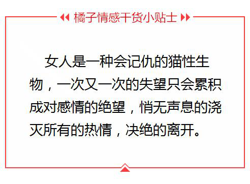
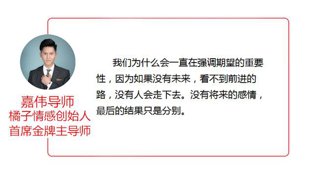
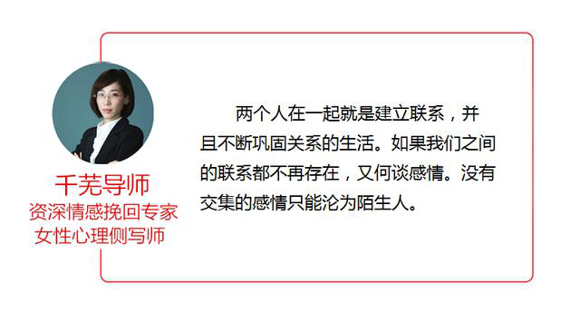

官方二维码
免费情感热线电话
4006-299-520

官方二维码
免费情感热线电话
4006-299-520

大家好，我们是橘子情感。专注情感，为爱而生。 从业八年以来，橘子情感始终秉承着“专注情感、专业服务、专心经营”的原则， 致力于为大家提供挽回爱情、挽救婚姻、 分离小三、订制爱情等两性情感服务。
冰冻三尺，非一日之寒；水滴石穿，非一日之功。
任何一段感情都需要双方共同用心的经营，但是多少人是理所当然的享受着对方竭尽所能的偏爱，忘记了初见时曾经刻骨铭心的感情。
再幸福的感情，都会因为不作为而分道扬镳。
未雨绸缪，大家一定要熟记并且警惕感情破裂的前兆。
你会对你不喜欢的事情关注吗？不会。那么，你会对那些不重要的人关注吗？当然也不会。
在感情中，如果对方对你的事情不再关注了，那么这就意味着，你已经渐渐开始成为那个不在乎的人了。因为不在乎，所以不管你回家多晚，睡的多晚，都没有关系，你的身体状态她不会在关心，在她心里，你是不重要的人。
另外，你都不是重要的人了，那么与你相关的家人、朋友自然也都不在关注的范围只内，各自做各自的生活就好。如果是有这样的情况，就是在感情的边缘了，一定要警惕。
人和行尸走肉的区别是，人会有期待，有期望，由此而衍生出欲望和目标，并且为之全心全意努力去达成。两个人之所以能够在一起，就是因为你能够给她提供她想要的，对方对你是欣赏并且愿意接受你。
在很多的时候，我们是抱着和你共度余生的态度去互相选择。如果对你的未来已经失望，那么我们的感情很快就会面临着破裂的情景。比方说，你有异性朋友，哪怕会亲密些，也不再吃醋了；不再主动问你未来的计划，也不会去计划；
你做错了事情，淡淡的说一声“以后记得就好了”；你好不好她不再关心，你变好对她来说也只是一句“哦”，很多的时候，女性在失望至极的时候反而不会咆哮发怒，所以大家一定要注意。
如果你有这样的问题，可以和橘子一起来聊聊怎么解决这样的问题。
很多人都是说，恋爱的时候，智商是为零的。虽然是句看似调侃的的话语，但其实，在很多的时候，我们在甜蜜的感情中，太过于在乎对方，感性会常常战胜理智，造成智商低的现象。但是当我们理智回归的时候，智商在线，那么也就说明，对方其实理性更多，也没有那么在乎你了。
在你面前突然表现的很成熟，好多事情欲言又止。处理事情的时候已经不在需要你帮忙，表现的很自主。当她从开始的喜欢你的幼稚，到现在嫌弃你的不成熟，再也没有了小女孩的姿态，变成了“女强人”的时候，我们真的需要警惕了，主动的去关注她的状态，发现感情中的危机，不要让矛盾就这样悄无声息的结束你的感情。
很多时候，女人在感情中会使活跃的那一个。女性的思维关注点主要是在事物之间的联系上，家长里短，鸡毛蒜皮，所有的所见所闻，都会跟你说。因为你是她生命中重要的人，更是她生活的伴侣，所以你是一个伙伴，更是一个交心的朋友。
当她不再发任何和你有关的状态了，频繁的开始发布与情感有关的心灵鸡汤文；不再跟你抱怨她的不开心，也不会和你分享她的开心；不再与你分享她对很多事情的看法；信息不回、电话不接渐渐变成常有的事，这些种种，都表示，你已经被她隔离出她的世界，并且之后就会将仅剩的感情联系一起隔离掉。一个连世界都不允许踏入的人，又怎么会忍受跟你在一起。
那么她隔离你离开其实也有很多的征兆，比方说，常常和除了你之外的人一起出门在外；不再黏着你了，她可以自己待着一整天；两个人在一起不像以前一样打打闹闹，而是静静的看着你；如果一个女生变得很安静，证明她在强迫自己离开你。因为在她看来，各自做各自的事情就好，你不打扰我，我不打扰你。
所以，如果有这样的问题，就是证明她正在逃离这份感情，并且即将得逞了，如果你遇到了这样的问题，建议和她好好的谈一谈，或者和橘子来谈谈，分析下感情危机的原因和解决方法。
在很多的感情破裂初期，其实只是情绪和氛围的变化，有的时候忙于工作或者其他的事情，就会很容易忽略掉。但是如果能够及早的发现这些征兆，及时的反思感情中的问题，多去关注对方，有可能就会避免悲剧的发生。
这样的征兆其实也有很多，比如说： 不再闹脾气了，明明在你身旁却总是抱起手机和别人聊天；对你的话题没有什么兴趣，敷衍了事；笑容越来越少了，面无表情，不再主动和你沟通，突然不再说话，就像是一个冷漠的大妈，你好像不再认识她，其实这样的征兆就是在日常中就可以体会到的。
另外，两个人在一起之后，关系的最直接变化就是两个人之间的接触。比如说，对你的接触不耐烦，并且会假装无视，对性生活兴趣降低，用各种借口和理由推脱，对表示爱情的动作，则以“例行公事”态度应对，这就是说她对你已经产生了抗拒，还有常见就是避免和你的眼神接触等等这样的行为。
当我们爱一个人的时候，恨不得你侬我侬，时刻在一起，而感情淡了，不再新鲜时，就是我们需要警惕的时候，对方如果有以上的情况，其实就是证明，两个人之间的感情出现了问题。我们需要做的是及时的冷静理智思考和反思，好好的和对方谈一谈，解决感情中的问题。如果大家遇到难题，也可以直接和橘子聊聊，我们一起来分析分析感情的问题。
关于两性之间的情感，其实还有很多的因素会影响最终的事态走向，橘子从业多年以来，对于情感挽回和情感狙击也是自成一套，帮助万例的男女成功收获幸福。如果您有情感问题，一定要及时采取有效措施解决，不要等到失去了才后悔莫及。
{kind=link}